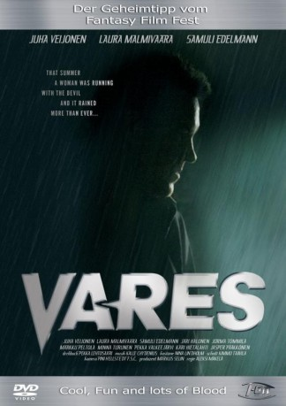

#11235 Private Eye - Ein tödlicher Auftrag
Alternativ: Private Eye Vares (Englischer Titel)
 
 IMDB-Wertung: 6.5 / 10
IMDB-Wertung: 6.5 / 10  Metascore: 0
Metascore: 0 
Privatdetektiv Jussi Vares ist ein Profi in seinem Job, immer cool, immer hintergründig und meist auch auf der richtigen Spur. Als die attraktive Lehrerin Eeva ihm berichtet, dass sie enorme Schwierigkeiten mit dem Boss der lokalen russischen Mafia hat, ist er sofort Feuer und Flamme - vor allem für seine Klientin. Doch es geht um weit mehr als nur um Meinungsverschiedenheiten, nämlich um einen Batzen verschwundenes Geld. Und schon muss sich Vares mit einem durchgedrehten, korrupten Cop, einer sexy Furie, diversen Hitmen und sonstigem zwielichtigen Gesindel rumschlagen. Ein mehr als anstrengender Auftrag erwartet ihn...
Jahr: 2004
Dauer: 95 Minuten
FSK: 16
Land: Finnland Studio: I-On New MediaTonspuren:
Untertitel: Deutsch, Englisch,
Auflösung: 1080p (1920x816) Größe: 8468 MB
Genre: Action, Thriller, Mystery
Regisseur: Aleksi Mäkelä
Drehbuch: Pekka Lehtosaari, Reijo Mäki
Soundtrack: Kalle Chydenius
Darsteller:
- Laura Malmivaara als Eeva Sunila
- Markku Peltola als Luusalmi
- Jorma Tommila als Antero Kraft
- Samuli Edelmann als Mikko Koitere
- Kari Hietalahti als Tetsuo Sinkkonen
 Jasper Pääkkönen als Jarmo
Jasper Pääkkönen als Jarmo Tommi Korpela als Uusniitty, saattovartija
Tommi Korpela als Uusniitty, saattovartija- Niko Saarela als Sotapoliisi
- Jani Volanen als Tarjoilija pubissa
- Juha Veijonen als Jussi Valtteri Vares
- Jari Halonen als Karl E. Miesmann
- Minna Turunen als Ifigenia Multanen
- Pekka Valkeejärvi als Jari 'Hillosilmä' Munck
- Santeri Kinnunen als Touko Reiman
- Heli Sutela als Liisa, Eevan ystävä
- Georges Copeloussis als Gennadi Antipov
- Mihail Jegorenkov als Sergei
- Viktor Drevitsky als Juri
- Jouko Klemettilä als Pappi
- Pekka Huotari als Lehtosuo, saattovartija
- Jussi Lampi als Pitkä mies
- Niko Rajala als Pitkän miehen kaveri
- Tero Jartti als Vanki Suihkussa
- Petri Manninen als Vanki suihkussa
- Sulevi Peltola als Pornokauppias Viljanen
- Svante Martin als Poliisipäällikkö Bo Bergström
- Tuula Nyman als Eira Heino, Jarmon äiti
- Tarja Saikkonen als Isabella
- Oiva Lohtander als Werneri Ahokas
- Pauliina Hukkanen als Pirre, Koitereen vaimo
- Topias Tanska als Jaakko, Koitereen poika
- Otto Lamberg als Otto, baarimikko
- Jorma Sairanen als Lentokapteeni
- Mikko Hirvonen als Uutistenlukija
- Katja Sirkiä als Miesmannin seuralainen autossa
- Mikko Salonen als Kendo-mies
- Tapio Kouki als Tarjoilija
- Mikko Takala als Poliisi rautatieasemalla
- Aatto Hirvonen als Konduktööri
- Jamina als Ellen, eroottinen hieroja
- Pena Loikkanen als Vartija vankilassa
- Reijo Mäki als Man in bar (uncredited)
Datei: X:\2004(N-Z)\Private Eye - Ein tödlicher Auftrag (2004, FSK16, 1920x816).mkv seit 24.05.2019
Festplatte: HD 2003-2004-2005(A-F)
 Es gibt insgesamt 54 Filme in der Gruppe '2004(N-Z)'
Es gibt insgesamt 54 Filme in der Gruppe '2004(N-Z)'